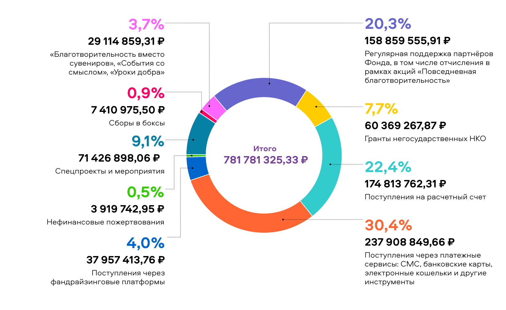
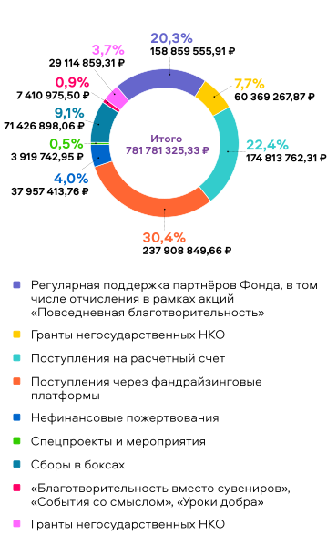
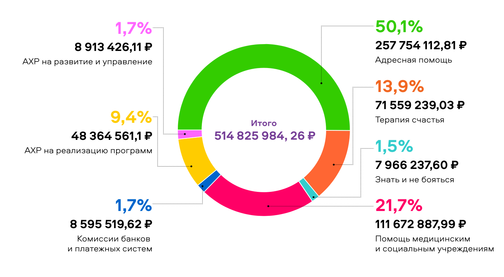
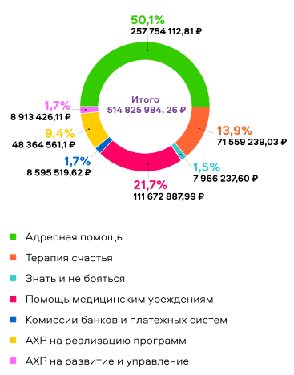

ПОСТУПЛЕНИЯ 2021


РАСХОДЫ 2021


Финансовый отчет сформирован по данным бухгалтерского учета и соответствует данным,
предоставляемым
в
Министерство юстиции РФ. Его показатели могут расходиться с данными ежемесячных финансовых
отчетов
на
сайте Фонда, формируемых по кассовому методу. Такой метод позволяет Фонду оперативно отслеживать
поступление и расходование, осуществлять финансовое планирование и следовать принятому бюджету
при
реализации благотворительных программ.